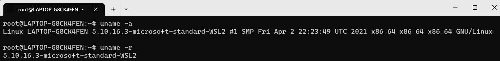
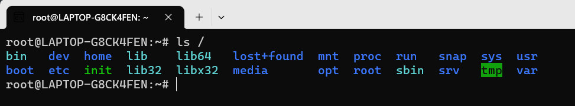

# Linux 配置
windows powershell
wsl --installl -d Ubuntu-20.04 |
linux
uname -r ： 显示操作系统的发行版号
uname -a ：显示系统名、节点名称、操作系统的发行版号、内核版本等等。

系统名：
Linux
节点名称：
LAPTOP-G8CK4FEN
操作系统的发行版号：
5.10.16.3-microsoft-standard-WSL2
硬件平台：
x86_64机器硬件名：
x86_64系统处理器的体系结构：
x86_64操作系统：
GNU/Linux
更新软件包
apt-get update |
安装最常用 linux 桌面程序 gedit
apt install gedit |
安装编译工具 gcc+cmake
apt install build-essential | |
apt install cmake |
apt-get install vim |
-
Linux yum 命令
yum（ Yellow dog Updater, Modified）是一个在 Fedora 和 RedHat 以及 SUSE 中的 Shell 前端软件包管理器。基于 RPM 包管理，能够从指定的服务器自动下载 RPM 包并且安装，可以自动处理依赖性关系，并且一次安装所有依赖的软件包，无须繁琐地一次次下载、安装。
yum提供了查找、安装、删除某一个、一组甚至全部软件包的命令，而且命令简洁而又好记。 -
Linux apt 命令
apt（Advanced Packaging Tool）是一个在 Debian 和 Ubuntu 中的 Shell 前端软件包管理器。apt命令提供了查找、安装、升级、删除某一个、一组甚至全部软件包的命令，而且命令简洁而又好记。apt命令执行需要超级管理员权限 (root)。
# Linux 基础
# 一些名词
在学习和使用 Linux 的过程中，经常会见到一些特有名词:
- GNU：Gnu’s Not Unix. 可以理解成一种口号，最早由 Richard Stallman 呼吁并倡导的，号召软件自由。
- GPL：General Public License. GNU 通用公共许可证，GPL 授予程序的接受方下述的权利，即 GPL 所倡导的 “自由”：
- 可以以任何目的运行所购买的程序；
- 在得到程序代码的前提下，可以以学习为目的，对源程序进行修改；
- 可以对复制件进行再发行；
- 对所购买的程序进行改进，并进行公开发布。
- LGPL (GNU Lesser General Public License): LGPL 是 GPL 的一个为主要为类库使用设计的开源协议。
- LGPL 允许商业软件通过类库引用 (link) 方式使用 LGPL 类库而不需要开源商业软件的代码。
- 采用 LGPL 协议的开源代码可以被商业软件作为类库引用并发布和销售。
- BSD 开源协议: BSD 开源协议是一个给于使用者很大自由的协议。基本上使用者可以” 为所欲为”，以 BSD 协议代码为基础做二次开发自己的产品时，需要满足三个条件：
- 如果再发布的产品中包含源代码，则在源代码中必须带有原来代码中的 BSD 协议。
- 不可以用开源代码的作者 / 机构名字和原来产品的名字做市场推广。
- BSD 代码鼓励代码共享，但需要尊重代码作者的著作权。
- FSF：自由软件基本会，给 GNU 提供资金支付的，毕竟没钱难成事啊。
- 自由软件：GNU 项目下的所有软件都基于 GPL 许可证（非 GNU 项目也可使用 GPL），都是自由软件。
- 开源软件：是美国 Open Source Initiative 协会定义，软件开放源代码。
- POSIX：（Portable Operating System Interface for Computing Systems）是由 IEEE 和 ISO/IEC 开发的一套标准。POSIX 标准是对 UNIX 操作系统的经验和实践的总结，对操作系统调用的服务接口进行了标准化，保证所编制的应用程序在源代码一级可以在多种操作系统上进行移植。
# Linux 内核
Linux 系统从应用角度来看，分为内核空间和用户空间两个部分。内核空间是 Linux 操作系统的主要部分，但是仅有内核的操作系统是不能完成用户任务的。丰富并且功能强大的应用程序包是一个操作系统成功的必要件。
Linux 的内核主要由 5 个子系统组成：** 进程调度、内存管理、虚拟文件系统、网络接口、进程间通信。** 下面将依次讲解这 5 个子系统。
-
进程调度 SCHED
进程调度指的是系统对进程的多种状态之间转换的策略。Linux 下的进程调度有 3 种策略：SCHED_OTHER、SCHED_FIFO 和 SCHED_RR。
- SCHED_OTHER：分时调度策略（默认），是用于针对普通进程的时间片轮转调度策略。
- SCHED_FIFO：实时调度策略，是针对运行的实时性要求比较高、运行时间短的进程调度策略
- SCHED_RR：实时调度策略，是针对实时性要求比较高、运行时间比较长的进程调度策略。
-
内存管理 MMU
- 内存管理是多个进程间的内存共享策略。在 Linux 中，内存管理主要说的是虚拟内存。
- 虚拟内存可以让进程拥有比实际物理内存更大的内存，可以是实际内存的很多倍。
- 每个进程的虚拟内存有不同的地址空间，多个进程的虚拟内存不会冲突。
-
虚拟文件系统 VFS
- 在 Linux 下支持多种文件系统，如 ext、ext2、minix、umsdos、msdos、vfat、ntfs、proc、smb、ncp、iso9660、sysv、hpfs、affs 等。
- 目前 Linux 下最常用的文件格式是 ext2 和 ext3。
-
网络接口
Linux 是在 Internet 飞速发展的时期成长起来的，所以 Linux 支持多种网络接口和协议。网络接口分为网络协议和驱动程序，网络协议是一种网络传输的通信标准，而网络驱动则是对硬件设备的驱动程序。Linux 支持的网络设备多种多样，几乎目前所有网络设备都有驱动程序。
-
进程间通信
Linux 操作系统支持多进程，进程之间需要进行数据的交流才能完成控制、协同工作等功能，Linux 的进程间通信是从 UNIX 系统继承过来的。Linux 下的进程间的通信方式主要有管道、信号、消息队列、共享内存和套接字等方法。
# Linux 系统目录结构
ls / |

树状目录结构：

系统启动必须：
-
/boot：存放的启动 Linux 时使用的内核文件，包括连接文件以及镜像文件。 -
/etc：存放所有的系统需要的配置文件和子目录列表，** 更改目录下的文件可能会导致系统不能启动。 -
/lib：存放基本代码库（比如 c++ 库），其作用类似于 Windows 里的 DLL 文件。几乎所有的应用程序都需要用到这些共享库。 -
/sys： 这是 linux2.6 内核的一个很大的变化。该目录下安装了 2.6 内核中新出现的一个文件系统 sysfs 。sysfs 文件系统集成了下面 3 种文件系统的信息：针对进程信息的 proc 文件系统、针对设备的 devfs 文件系统以及针对伪终端的 devpts 文件系统。该文件系统是内核设备树的一个直观反映。当一个内核对象被创建的时候，对应的文件和目录也在内核对象子系统中
指令集合：
-
/bin：存放着最常用的程序和指令 -
/sbin：只有系统管理员能使用的程序和指令。是 Superuser Binaries (超级用户的二进制文件) 的缩写，这里存放的是系统管理员使用的系统管理程序。
外部文件管理：
-
/dev：Device (设备) 的缩写，存放的是 Linux 的外部设备。注意：在 Linux 中访问设备和访问文件的方式是相同的。 -
/media：类 windows 的其他设备，例如 U 盘、光驱等等，识别后 linux 会把设备放到这个目录下。 -
/mnt：临时挂载别的文件系统的，我们可以将光驱挂载在 /mnt/ 上，然后进入该目录就可以查看光驱里的内容了。
临时文件：
-
/run：是一个临时文件系统，存储系统启动以来的信息。当系统重启时，这个目录下的文件应该被删掉或清除。如果你的系统上有 /var/run 目录，应该让它指向 run。 -
/lost+found：一般情况下为空的，系统非法关机后，这里就存放一些文件。 -
/tmp：这个目录是用来存放一些临时文件的。
账户：
-
/root：系统管理员的用户主目录。 -
/home：用户的主目录，以用户的账号命名的。 -
/usr： usr 是 unix shared resources (共享资源) 的缩写，这是一个非常重要的目录，用户的很多应用程序和文件都放在这个目录下，类似于 windows 下的 program files 目录。 -
/usr/bin：系统用户使用的应用程序与指令。 -
/usr/sbin：超级用户使用的比较高级的管理程序和系统守护程序。 -
/usr/src：内核源代码默认的放置目录。
运行过程中要用：
-
/var：存放经常修改的数据，比如程序运行的日志文件（/var/log 目录下）。 -
/proc：管理 ** 内存空间！** 虚拟的目录，是系统内存的映射，我们可以直接访问这个目录来，获取系统信息。这个目录的内容不在硬盘上而是在内存里，我们也可以直接修改里面的某些文件来做修改。
扩展用的：
-
/opt：默认是空的，我们安装额外软件可以放在这个里面。 -
/srv：存放服务启动后需要提取的数据 **（不用服务器就是空）**
# Linux 文件基本属性
Linux 系统是一种典型的多用户系统，不同的用户处于不同的地位，拥有不同的权限。
为了保护系统的安全性，Linux 系统对不同的用户访问同一文件（包括目录文件）的权限做了不同的规定。
在 Linux 中我们通常使用以下两个命令来修改文件或目录的所属用户与权限：
chown(change owner) ： 修改所属用户与组。chmod(change mode) ： 修改用户的权限。
在 Linux 中我们可以使用 ll 或者 ls –l 命令来显示一个文件的属性以及文件所属的用户和组，如：
root@LAPTOP-G8CK4FEN:/# ll | |
total 1480 | |
drwxr-xr-x 19 root root 4096 Mar 9 08:01 ./ | |
drwxr-xr-x 19 root root 4096 Mar 9 08:01 ../ | |
lrwxrwxrwx 1 root root 7 Apr 23 2020 bin -> usr/bin/ | |
drwxr-xr-x 2 root root 4096 Apr 23 2020 boot/ |
实例中，boot 文件的第一个属性用 d 表示。d 在 Linux 中代表该文件是一个目录文件。
在 Linux 中第一个字符代表这个文件是目录、文件或链接文件等等。
- 当为 d 则是目录
- 当为 - 则是文件；
- 若是 l 则表示为链接文档 (link file)；
- 若是 b 则表示为装置文件里面的可供储存的接口设备 (可随机存取装置)；
- 若是 c 则表示为装置文件里面的串行端口设备，例如键盘、鼠标 (一次性读取装置)。
接下来的字符中，以三个为一组，且均为 rwx 的三个参数的组合。其中， r 代表可读 (read)、 w 代表可写 (write)、 x 代表可执行 (execute)。 要注意的是，这三个权限的位置不会改变，如果没有权限，就会出现减号 - 而已。


从左至右用 0-9 这些数字来表示。
第 0 位确定文件类型，第 1-3 位确定属主（该文件的所有者）拥有该文件的权限。
第 4-6 位确定属组（所有者的同组用户）拥有该文件的权限，第 7-9 位确定其他用户拥有该文件的权限。
其中，第 1、4、7 位表示读权限，如果用 r 字符表示，则有读权限，如果用 - 字符表示，则没有读权限；第 2、5、8 位表示写权限，如果用 w 字符表示，则有写权限，如果用 - 字符表示没有写权限；第 3、6、9 位表示可执行权限，如果用 x 字符表示，则有执行权限，如果用 - 字符表示，则没有执行权限。
# Linux 文件与目录管理
我们知道 Linux 的目录结构为树状结构，最顶级的目录为根目录 /。
其他目录通过挂载可以将它们添加到树中，通过解除挂载可以移除它们。
- 绝对路径：
路径的写法，由根目录 / 写起，例如：/usr/share/doc这个目录。 - 相对路径：
路径的写法，不是由 / 写起，例如由/usr/share/doc要到/usr/share/man底下时，可以写成：cd ../man这就是相对路径的写法。
“/” 在系统文件中表示绝对路径；
“/” 处于 Linux 文件系统树形结构的最顶端，我们称它为 Linux 文件系统的 root，它是 Linux 文件系统的入口；
所有的目录、文件、设备都在 “/” 之下，它是 Linux 文件系统最顶层的唯一的目录；
一般建议在根目录下面只有目录，不要直接存放文件；
根目录是 linux 系统启动时系统第一个载入的分区，所以启动过程中用到的文件应该都放在这个分区中；
其中 /etc 、 /bin 、 /dev 、 /lib 、 /sbin 这 5 个子目录都应该要与根目录连在一起，不可独立成为某个分区。
“./” 代表的意思是： ./ 代表当前文件目录，某一个文件（或者目录）的查找路径是从当前目录 “.” 下面开始进行查找。
“~” 代表的意思是：表示代码主目录，也就是当前登录用户的用户目录。
“…” 代表的意思是：“…” 表示上级目录
# 命令解析器
在 Linux 中需要通过终端执行对应的命令来完成某些操作，那么这些命令是如何被执行的呢？
这些命令都是通过命令解析器解析完成并执行的，如果用户在终端输入是正确的内部指令，命令解析器就执行这个命令，如果不是正确的指令，则提示命令无法解析。
# 工作原理
命令解析器在 Linux 操作系统中就是一个进程 (运行的应用程序), 它的名字叫做 bash 通常我们更习惯将其称之为 shell (即: sh)。他们之间的渊源是这样的，在 Unix 操作系统诞生之后一个叫伯恩 (Bourne) 的人为其编写了命令解析器取名为 shell, Linux 操作系统诞生之后伯恩再次改写了 shell (sh), 将其称之为 bash (Bourne Again SHell), bash 就是 sh 的增强版本。
在 Linux 操作系统中默认使用的命令解析器是 bash, 当然也同样支持使用 sh。当用户打开一个终端窗口，并输入相关指令， 按回车键， 这时候命令解析器就开始工作了， 具体步骤如下：
-
在 Linux 中有一个叫做 PATH 的环境变量，里边存储了一些系统目录 (windows 也有，叫 Path)
# 通过 echo 命令可以查看环境变量 PATH 中的值，在 shell 中变量名前加 $ 就是取值[root@VM-8-14-centos ~]# echo $PATH
/usr/local/sbin:/usr/local/bin:/usr/sbin:/usr/bin:/root/bin
-
命令解析器需要依次搜索 PATH 中的各个目录，检查这些目录中是否有用户输入的指令
-
如果找到了，执行该目录下的可执行程序，用户输入的命令就被执行完毕了
-
如果没有找到，继续搜索其他目录，最后还是没有找到，会提示命令找不到，因此无法被执行
[root@VM-8-14-centos ~]# asdjflksd
-bash: asdjflksd: command not found
-
# 命令提示行
在 Linux 终端中，输入要执行的指令之前会有想用的命令提示，我们将其称之为命令提示行，例如:
[root@VM-8-14-centos ~/mywork/workspace]# | |
[user01@VM-8-14-centos ~/mywork/workspace]$ |
root: 当前登录的用户的用户名@: at -> 在VM-8-14-centos: 主机名，在安装这个 linux 操作系统的时候手动指定，可以修改~: 当前用户的家目录- 在 linux 中有很多用户，每个用户都用一个属于自己的目录，这个目录称之为家目录
- 普通用户家目录 /home/ 用户名，root 用户家目录 /root
~/mywork/workspace: 当前用户所在的工作目录，也可以使用 pwd 命令查看#: 代表当前用户是root用户$:当前用户是普通用户，也就是说例子中的user01是一个普通用户
# 命令行快捷键
Tab命令自动补齐- 在终端中输入 某个命令的前一个或若干个字符，再按 Tab 键
- 由于很多 shell 命令的开头字母是相同的，在这种情况下，按一次 Tab 是不会自动补齐的，我们可以连续按两次 Tab 键，在当前终端中就可以显示出所有匹配成功的 shell 命令
- 为了能够快速补全 shell 指令，我们可以多输入一些前缀字符之后，再按 Tab 键
Ctrl+p显示输入的上一个历史命令- 从输入的最后一个命令往前倒，也可以使用 ↑键
Ctrl+n显示输入的下一个历史命令 也可以使用 ↓键Ctrl+a光标移动命命令行首 也可以使用 Home 键Ctrl+e光标移动命命令行尾 也可以使用 End 键Ctrl+u删除光标前的部分字符串Ctrl+k删除光标后的部分字符串Backspace/Delete删除光标前 / 后的一个字符
# 处理目录的常用命令
ls（英文全拼：list files）: 列出目录及文件名cd（英文全拼：change directory）：切换目录pwd（英文全拼：print work directory）：显示目前的目录mkdir（英文全拼：make directory）：创建一个新的目录rmdir（英文全拼：remove directory）：删除一个空的目录cp（英文全拼：copy file）: 复制文件或目录rm（英文全拼：remove）: 删除文件或目录mv（英文全拼：move file）: 移动文件与目录，或修改文件与目录的名称
可以使用 man [命令] 来查看各个命令的使用文档，如 ：man cp。
# ls (列出目录)
在 Linux 系统当中， ls 命令可能是最常被运行的。
选项与参数：
- -a ：全部的文件，连同隐藏文件 (开头为。的文件) 一起列出来 (常用)
- -d ：仅列出目录本身，而不是列出目录内的文件数据 (常用)
- -l ：长数据串列出，包含文件的属性与权限等等数据；(常用)
# cd (切换目录)
cd 是 Change Directory 的缩写，这是用来变换工作目录的命令。
语法：
cd [相对路径或绝对路径] |
#使用 mkdir 命令创建 runoob 目录 | |
[root@www ~]# mkdir runoob | |
#使用绝对路径切换到 runoob 目录 | |
[root@www ~]# cd /root/runoob/ | |
#使用相对路径切换到 runoob 目录 | |
[root@www ~]# cd ./runoob/ | |
# 表示回到自己的家目录，亦即是 /root 这个目录 | |
[root@www runoob]# cd ~ | |
# 表示去到目前的上一级目录，亦即是 /root 的上一级目录的意思； | |
[root@www ~]# cd .. |
# pwd (显示目前所在的目录)
pwd 是 Print Working Directory 的缩写，也就是显示目前所在目录的命令。
[root@www ~]# pwd [-P] |
选项与参数：
- -P ：显示出确实的路径，而非使用链接 (link) 路径。
# mkdir (创建新目录)
如果想要创建新的目录的话，那么就使用 mkdir (make directory) 吧。
语法：
mkdir [-mp] 目录名称 |
选项与参数：
- -m ：配置文件的权限喔！直接配置，不需要看默认权限 (umask) 的脸色～
- -p ：帮助你直接将所需要的目录 (包含上一级目录) 递归创建起来！
实例：请到 /tmp 底下尝试创建数个新目录看看：
[root@www ~]# cd /tmp | |
[root@www tmp]# mkdir test <== 创建一名为 test 的新目录 | |
[root@www tmp]# mkdir test1/test2/test3/test4 | |
mkdir: cannot create directory `test1/test2/test3/test4': | |
No such file or directory <== 没办法直接创建此目录啊！ | |
[root@www tmp]# mkdir -p test1/test2/test3/test4 |
# rmdir (删除空的目录)
语法：
rmdir [-p] 目录名称 |
选项与参数：
- **-p ：** 从该目录起，一次删除多级空目录
删除 runoob 目录
[root@www tmp]# rmdir runoob/
将 mkdir 实例中创建的目录 (/tmp 底下) 删除掉！
[root@www tmp]# ls -l <== 看看有多少目录存在？ | |
drwxr-xr-x 3 root root 4096 Jul 18 12:50 test | |
drwxr-xr-x 3 root root 4096 Jul 18 12:53 test1 | |
drwx--x--x 2 root root 4096 Jul 18 12:54 test2 | |
[root@www tmp]# rmdir test <== 可直接删除掉，没问题 | |
[root@www tmp]# rmdir test1 <== 因为尚有内容，所以无法删除！ | |
rmdir: `test1': Directory not empty | |
[root@www tmp]# rmdir -p test1/test2/test3/test4 | |
[root@www tmp]# ls -l <== 您看看，底下的输出中 test 与 test1 不见了！ | |
drwx--x--x 2 root root 4096 Jul 18 12:54 test2 |
利用 -p 这个选项，立刻就可以将 test1/test2/test3/test4 一次删除。
不过要注意的是，这个 rmdir 仅能删除空的目录，你可以使用 rm 命令来删除非空目录。
# cp (复制文件或目录)
cp 即拷贝文件和目录。
语法:
[root@www ~]# cp [-adfilprsu] 来源档 (source) 目标档 (destination) | |
[root@www ~]# cp [options] source1 source2 source3 .... directory |
选项与参数：
- **-a：** 相当於 -pdr 的意思，至於 pdr 请参考下列说明；(常用)
- **-d：** 若来源档为链接档的属性 (link file)，则复制链接档属性而非文件本身；
- **-f：** 为强制 (force) 的意思，若目标文件已经存在且无法开启，则移除后再尝试一次；
- **-i：** 若目标档 (destination) 已经存在时，在覆盖时会先询问动作的进行 (常用)
- **-l：** 进行硬式链接 (hard link) 的链接档创建，而非复制文件本身；
- **-p：** 连同文件的属性一起复制过去，而非使用默认属性 (备份常用)；
- **-r：** 递归持续复制，用於目录的复制行为；(常用)
- **-s：** 复制成为符号链接档 (symbolic link)，亦即『捷径』文件；
- **-u：** 若 destination 比 source 旧才升级 destination ！
用 root 身份，将 root 目录下的 .bashrc 复制到 /tmp 下，并命名为 bashrc
[root@www ~]# cp ~/.bashrc /tmp/bashrc | |
[root@www ~]# cp -i ~/.bashrc /tmp/bashrc | |
cp: overwrite `/tmp/bashrc'? n <==n不覆盖，y为覆盖 |
# rm (移除文件或目录)
语法：
rm [-fir] 文件或目录 |
选项与参数：
- -f ：就是 force 的意思，忽略不存在的文件，不会出现警告信息；
- -i ：互动模式，在删除前会询问使用者是否动作
- -r ：递归删除啊！最常用在目录的删除了！这是非常危险的选项！！！
将刚刚在 cp 的实例中创建的 bashrc 删除掉！
[root@www tmp]# rm -i bashrc | |
rm: remove regular file `bashrc'? y |
如果加上 -i 的选项就会主动询问喔，避免你删除到错误的档名！
# mv (移动文件与目录，或修改名称)
语法：
[root@www ~]# mv [-fiu] source destination | |
[root@www ~]# mv [options] source1 source2 source3 .... directory |
选项与参数：
- -f ：force 强制的意思，如果目标文件已经存在，不会询问而直接覆盖；
- -i ：若目标文件 (destination) 已经存在时，就会询问是否覆盖！
- -u ：若目标文件已经存在，且 source 比较新，才会升级 (update)
复制一文件，创建一目录，将文件移动到目录中
[root@www ~]# cd /tmp | |
[root@www tmp]# cp ~/.bashrc bashrc | |
[root@www tmp]# mkdir mvtest | |
[root@www tmp]# mv bashrc mvtest |
将某个文件移动到某个目录去，就是这样做！
将刚刚的目录名称更名为 mvtest2
[root@www tmp]# mv mvtest mvtest2 |
# Linux 文件内容查看
Linux 系统中使用以下命令来查看文件的内容：
cat由第一行开始显示文件内容tac从最后一行开始显示，可以看出 tac 是 cat 的倒着写！nl显示的时候，顺道输出行号！more一页一页的显示文件内容less与more类似，但是比 more 更好的是，他可以往前翻页！head只看头几行tail只看尾巴几行
你可以使用 *man [命令]* 来查看各个命令的使用文档，如 ：man cp。
# cat
由第一行开始显示文件内容
语法：
cat [-AbEnTv] |
选项与参数：
- -A ：相当於 -vET 的整合选项，可列出一些特殊字符而不是空白而已；
- -b ：列出行号，仅针对非空白行做行号显示，空白行不标行号！
- -E ：将结尾的断行字节 $ 显示出来；
- -n ：列印出行号，连同空白行也会有行号，与 -b 的选项不同；
- -T ：将 [tab] 按键以 ^I 显示出来；
- -v ：列出一些看不出来的特殊字符
检看 /etc/issue 这个文件的内容：
[root@www ~]# cat /etc/issue | |
CentOS release 6.4 (Final) | |
Kernel \r on an \m |
# tac
tac 与 cat 命令刚好相反，文件内容从最后一行开始显示，可以看出 tac 是 cat 的倒着写！如：
[root@www ~]# tac /etc/issue | |
Kernel \r on an \m | |
CentOS release 6.4 (Final) |
# nl
显示行号
语法：
nl [-bnw] 文件 |
选项与参数：
- -b ：指定行号指定的方式，主要有两种：
-b a ：表示不论是否为空行，也同样列出行号 (类似 cat -n)；
-b t ：如果有空行，空的那一行不要列出行号 (默认值)； - -n ：列出行号表示的方法，主要有三种：
-n ln ：行号在荧幕的最左方显示；
-n rn ：行号在自己栏位的最右方显示，且不加 0 ；
-n rz ：行号在自己栏位的最右方显示，且加 0 ； - -w ：行号栏位的占用的位数。
实例一：用 nl 列出 /etc/issue 的内容
[root@www ~]# nl /etc/issue | |
1 CentOS release 6.4 (Final) | |
2 Kernel \r on an \m |
# more
一页一页翻动
[root@www ~]# more /etc/man_db.config | |
# | |
# Generated automatically from man.conf.in by the | |
# configure script. | |
# | |
# man.conf from man-1.6d | |
....(中间省略).... | |
--More--(28%) <== 重点在这一行喔！你的光标也会在这里等待你的命令 |
在 more 这个程序的运行过程中，你有几个按键可以按的：
- 空白键 (space)：代表向下翻一页；
- Enter ：代表向下翻『一行』；
- / 字串 ：代表在这个显示的内容当中，向下搜寻『字串』这个关键字；
- :f ：立刻显示出档名以及目前显示的行数；
- q ：代表立刻离开 more ，不再显示该文件内容。
- b 或 [ctrl]-b ：代表往回翻页，不过这动作只对文件有用，对管线无用。
# less
一页一页翻动，以下实例输出 /etc/man.config 文件的内容：
[root@www ~]# less /etc/man.config
#
# Generated automatically from man.conf.in by the
# configure script.
#
# man.conf from man-1.6d
....(中间省略)....
: <== 这里可以等待你输入命令！
less 运行时可以输入的命令有：
- 空白键 ：向下翻动一页；
- [pagedown]：向下翻动一页；
- [pageup] ：向上翻动一页；
- / 字串 ：向下搜寻『字串』的功能；
- ? 字串 ：向上搜寻『字串』的功能；
- n ：重复前一个搜寻 (与 / 或？有关！)
- N ：反向的重复前一个搜寻 (与 / 或？有关！)
- q ：离开 less 这个程序；
# head
取出文件前面几行
语法：
head [-n number] 文件 |
选项与参数：
- -n ：后面接数字，代表显示几行的意思
[root@www ~]# head /etc/man.config |
默认的情况中，显示前面 10 行！若要显示前 20 行，就得要这样：
[root@www ~]# head -n 20 /etc/man.config |
# tail
取出文件后面几行
语法：
tail [-n number] 文件 |
选项与参数：
- -n ：后面接数字，代表显示几行的意思
- -f ：表示持续侦测后面所接的档名，要等到按下 [ctrl]-c 才会结束 tail 的侦测
[root@www ~]# tail /etc/man.config | |
# 默认的情况中，显示最后的十行！若要显示最后的 20 行，就得要这样： | |
[root@www ~]# tail -n 20 /etc/man.config |
# Linux 链接概念
Linux 链接分两种，一种被称为硬链接（Hard Link），另一种被称为符号链接（Symbolic Link）。默认情况下，ln 命令产生硬链接。
# 硬连接
硬连接指通过索引节点来进行连接。在 Linux 的文件系统中，保存在磁盘分区中的文件不管是什么类型都给它分配一个编号，称为索引节点号 (Inode Index)。在 Linux 中，多个文件名指向同一索引节点是存在的。比如：A 是 B 的硬链接（A 和 B 都是文件名），则 A 的目录项中的 inode 节点号与 B 的目录项中的 inode 节点号相同，即一个 inode 节点对应两个不同的文件名，两个文件名指向同一个文件，A 和 B 对文件系统来说是完全平等的。删除其中任何一个都不会影响另外一个的访问。
硬连接的作用是允许一个文件拥有多个有效路径名，这样用户就可以建立硬连接到重要文件，以防止 “误删” 的功能。其原因如上所述，因为对应该目录的索引节点有一个以上的连接。只删除一个连接并不影响索引节点本身和其它的连接，只有当最后一个连接被删除后，文件的数据块及目录的连接才会被释放。也就是说，文件真正删除的条件是与之相关的所有硬连接文件均被删除。
# 软连接
另外一种连接称之为符号连接（Symbolic Link），也叫软连接。软链接文件有类似于 Windows 的快捷方式。它实际上是一个特殊的文件。在符号连接中，文件实际上是一个文本文件，其中包含的有另一文件的位置信息。比如：A 是 B 的软链接（A 和 B 都是文件名），A 的目录项中的 inode 节点号与 B 的目录项中的 inode 节点号不相同，A 和 B 指向的是两个不同的 inode，继而指向两块不同的数据块。但是 A 的数据块中存放的只是 B 的路径名（可以根据这个找到 B 的目录项）。A 和 B 之间是 “主从” 关系，如果 B 被删除了，A 仍然存在（因为两个是不同的文件），但指向的是一个无效的链接。
通过实验加深理解
[oracle@Linux]$ touch f1 #创建一个测试文件f1
[oracle@Linux]$ ln f1 f2 #创建f1的一个硬连接文件f2
[oracle@Linux]$ ln -s f1 f3 #创建f1的一个符号连接文件f3
[oracle@Linux]$ ls -li # -i参数显示文件的inode节点信息
total 0
9797648 -rw-r--r-- 2 oracle oinstall 0 Apr 21 08:11 f1
9797648 -rw-r--r-- 2 oracle oinstall 0 Apr 21 08:11 f2
9797649 lrwxrwxrwx 1 oracle oinstall 2 Apr 21 08:11 f3 -> f1
从上面的结果中可以看出，硬连接文件 f2 与原文件 f1 的 inode 节点相同，均为 9797648，然而符号连接文件的 inode 节点不同。
[oracle@Linux]$ echo "I am f1 file" >>f1
[oracle@Linux]$ cat f1
I am f1 file
[oracle@Linux]$ cat f2
I am f1 file
[oracle@Linux]$ cat f3
I am f1 file
[oracle@Linux]$ rm -f f1
[oracle@Linux]$ cat f2
I am f1 file
[oracle@Linux]$ cat f3
cat: f3: No such file or directory
通过上面的测试可以看出：当删除原始文件 f1 后，硬连接 f2 不受影响，但是符号连接 f3 文件无效
总结
依此您可以做一些相关的测试，可以得到以下全部结论：
- 1). 删除符号连接 f3, 对 f1,f2 无影响；
- 2). 删除硬连接 f2，对 f1,f3 也无影响；
- 3). 删除原文件 f1，对硬连接 f2 没有影响，导致符号连接 f3 失效；
- 4). 同时删除原文件 f1, 硬连接 f2，整个文件会真正的被删除。
# Linux 用户和用户组管理
Linux 系统是一个多用户多任务的分时操作系统，任何一个要使用系统资源的用户，都必须首先向系统管理员申请一个账号，然后以这个账号的身份进入系统。
用户的账号一方面可以帮助系统管理员对使用系统的用户进行跟踪，并控制他们对系统资源的访问；另一方面也可以帮助用户组织文件，并为用户提供安全性保护。
每个用户账号都拥有一个唯一的用户名和各自的口令。
用户在登录时键入正确的用户名和口令后，就能够进入系统和自己的主目录。
实现用户账号的管理，要完成的工作主要有如下几个方面：
- 用户账号的添加、删除与修改。
- 用户口令的管理。
- 用户组的管理。
# Linux 压缩命令
# Linux 查找命令
# Linux 磁盘管理
Linux 磁盘管理好坏直接关系到整个系统的性能问题。
Linux 磁盘管理常用三个命令为 df 、 du 和 fdisk 。
df（英文全称：disk free）：列出文件系统的整体磁盘使用量du（英文全称：disk used）：检查磁盘空间使用量fdisk：用于磁盘分区
# df
df 命令参数功能：检查文件系统的磁盘空间占用情况。可以利用该命令来获取硬盘被占用了多少空间，目前还剩下多少空间等信息。
语法：
df [-ahikHTm] [目录或文件名] |
选项与参数：
-a：列出所有的文件系统，包括系统特有的 /proc 等文件系统；-k：以 KBytes 的容量显示各文件系统；-m：以 MBytes 的容量显示各文件系统；-h：以人们较易阅读的 GBytes, MBytes, KBytes 等格式自行显示；-H：以 M=1000K 取代 M=1024K 的进位方式；-T：显示文件系统类型，连同该 partition 的 filesystem 名称 (例如 ext3) 也列出；-i：不用硬盘容量，而以 inode 的数量来显示
# du
Linux du 命令也是查看使用空间的，但是与 df 命令不同的是 Linux du 命令是对文件和目录磁盘使用的空间的查看，还是和 df 命令有一些区别的，这里介绍 Linux du 命令。
语法：
du [-ahskm] 文件或目录名称
选项与参数：
-a：列出所有的文件与目录容量，因为默认仅统计目录底下的文件量而已。-h：以人们较易读的容量格式 (G/M) 显示；-s：列出总量而已，而不列出每个各别的目录占用容量；-S：不包括子目录下的总计，与 -s 有点差别。-k：以 KBytes 列出容量显示；-m：以 MBytes 列出容量显示；
# fdisk
fdisk 是 Linux 的磁盘分区表操作工具。
语法：
fdisk [-l] 装置名称 |
选项与参数：
-l：输出后面接的装置所有的分区内容。若仅有 fdisk -l 时， 则系统将会把整个系统内能够搜寻到的装置的分区均列出来。
# Linux vi/vim
所有的 Unix Like 系统都会内建 vi 文书编辑器，其他的文书编辑器则不一定会存在。
但是目前我们使用比较多的是 vim 编辑器。
vim 具有程序编辑的能力，可以主动的以字体颜色辨别语法的正确性，方便程序设计。
# 什么是 vim？
Vim 是从 vi 发展出来的一个文本编辑器。代码补全、编译及错误跳转等方便编程的功能特别丰富，在程序员中被广泛使用。
简单的来说， vi 是老式的字处理器，不过功能已经很齐全了，但是还是有可以进步的地方。 vim 则可以说是程序开发者的一项很好用的工具。
连 vim 的官方网站 (https://www.vim.org/) 自己也说 vim 是一个程序开发工具而不是文字处理软件。

# vi/vim 的使用
基本上 vi/vim 共分为三种模式，分别是命令模式（Command mode），输入模式（Insert mode）和底线命令模式（Last line mode）。 这三种模式的作用分别是：
# 命令模式：
用户刚刚启动 vi/vim，便进入了命令模式。
此状态下敲击键盘动作会被 Vim 识别为命令，而非输入字符。比如我们此时按下 i，并不会输入一个字符，i 被当作了一个命令。
以下是常用的几个命令：
i切换到输入模式，以输入字符。x删除当前光标所在处的字符。:切换到底线命令模式，以在最底一行输入命令。
若想要编辑文本：启动 Vim，进入了命令模式，按下 i，切换到输入模式。
命令模式只有一些最基本的命令，因此仍要依靠底线命令模式输入更多命令。
# 输入模式
在命令模式下按下 i 就进入了输入模式。
在输入模式中，可以使用以下按键：
- 字符按键以及 Shift 组合，输入字符
- ENTER，回车键，换行
- BACK SPACE，退格键，删除光标前一个字符
- DEL，删除键，删除光标后一个字符
- 方向键，在文本中移动光标
- HOME/END，移动光标到行首 / 行尾
- Page Up/Page Down，上 / 下翻页
- Insert，切换光标为输入 / 替换模式，光标将变成竖线 / 下划线
- ESC，退出输入模式，切换到命令模式
# 底线命令模式
在命令模式下按下:（英文冒号）就进入了底线命令模式。
底线命令模式可以输入单个或多个字符的命令，可用的命令非常多。
在底线命令模式中，基本的命令有（已经省略了冒号）：
q退出程序w保存文件
按 ESC 键可随时退出底线命令模式。
简单的说，我们可以将这三个模式想成底下的图标来表示：

# vi/vim 使用实例
使用 vi/vim 进入一般模式
如果你想要使用 vi 来建立一个名为 runoob.txt 的文件时，你可以这样做：
$ vim runoob.txt |
直接输入 vi 文件名 就能够进入 vi 的一般模式了。请注意，记得 vi 后面一定要加文件名，不管该文件存在与否！

按下 i 进入输入模式 (也称为编辑模式)，开始编辑文字
在一般模式之中，只要按下 i, o, a 等字符就可以进入输入模式了！
在编辑模式当中，你可以发现在左下角状态栏中会出现 –INSERT- 的字样，那就是可以输入任意字符的提示。
这个时候，键盘上除了 Esc 这个按键之外，其他的按键都可以视作为一般的输入按钮了，所以你可以进行任何的编辑。

按下 ESC 按钮回到一般模式
好了，假设我已经按照上面的样式给他编辑完毕了，那么应该要如何退出呢？是的！没错！就是给他按下 Esc 这个按钮即可！马上你就会发现画面左下角的 – INSERT – 不见了！
在一般模式中按下 :wq 储存后离开 vi
OK，我们要存档了，存盘并离开的指令很简单，输入 :wq 即可保存离开！

OK! 这样我们就成功创建了一个 runoob.txt 的文件。
# GCC
GCC 是 Linux 下的编译工具集，是 GNU Compiler Collection 的缩写，包含 gcc、g++ 等编译器。这个工具集不仅包含编译器，还包含其他工具集，例如 ar、nm 等。
GCC 工具集不仅能编译 C/C++ 语言，其他例如 Objective-C、Pascal、Fortran、Java、Ada 等语言均能进行编译。GCC 在可以根据不同的硬件平台进行编译，即能进行交叉编译，在 A 平台上编译 B 平台的程序，支持常见的 X86、ARM、PowerPC、mips 等，以及 Linux、Windows 等软件平台。
# 安装 GCC
# 安装软件必须要有管理员权限 | |
# ubuntu | |
$ sudo apt update # 更新本地的软件下载列表，得到最新的下载地址 | |
$ sudo apt install gcc g++ # 通过下载列表中提供的地址下载安装包，并安装 | |
# centos | |
$ sudo yum update # 更新本地的软件下载列表，得到最新的下载地址 | |
$ sudo yum install gcc g++ # 通过下载列表中提供的地址下载安装包，并安装 | |
# 查看 gcc 版本 | |
$ gcc -v | |
$ gcc --version | |
# 查看 g++ 版本 | |
$ g++ -v | |
$ g++ --version |
# gcc 工作流程
GCC 编译器对程序的编译下图所示，分为 4 个阶段：预处理（预编译）、编译和优化、汇编和链接。GCC 的编译器可以将这 4 个步骤合并成一个。 先介绍一个每个步骤都分别做了写什么事儿:
-
预处理：在这个阶段主要做了三件事：展开头文件 、宏替换 、去掉注释行
这个阶段需要 GCC 调用预处理器来完成，最终得到的还是源文件，文本格式
-
编译：这个阶段需要 GCC 调用编译器对文件进行编译，最终得到一个汇编文件
-
汇编：这个阶段需要 GCC 调用汇编器对文件进行汇编，最终得到一个二进制文件
-
链接：这个阶段需要 GCC 调用链接器对程序需要调用的库进行链接，最终得到一个可执行的二进制文件
| 文件名后缀 | 说明 | gcc 参数 |
|---|---|---|
| .c | 源文件 | 无 |
| .i | 预处理后的 C 文件 | -E |
| .s | 编译之后得到的汇编语言的源文件 | -S |
| .o | 汇编后得到的二进制文件 | -c |
在 Linux 下使用 GCC 编译器编译单个文件十分简单，直接使用 gcc 命令后面加上要编译的 C 语言的源文件，GCC 会自动生成文件名为 a.out 的可执行文件（也可以通过参数 -o 指定生成的文件名），也就是通过一个简单的命令上边提到的 4 个步骤就全部执行完毕了。但是如果想要单步执行也是没问题的， 示例如下：
// 源文件名 test.c | |
#include <stdio.h> | |
#include <stdlib.h> | |
#include <unistd.h> | |
#include <string.h> | |
int main() | |
{ | |
int array[5] = {1,2,3,4,5}; | |
for(int i=0; i<5; ++i) | |
{ | |
printf("array[%d] = %d\n", i, array[i]); | |
} | |
return 0; | |
} |
-
对源文件进行预处理，需要使用的 gcc 参数为 -E
l # 1. 预处理，-o 指定生成的文件名$ gcc -E test.c -o test.i
-
编译预处理之后的文件，需要使用的 gcc 参数为 -S
l # 2. 编译，得到汇编文件$ gcc -S test.i -o test.s
-
对得到的汇编文件进行汇编，需要使用的 gcc 参数为 -c
l # 3. 汇编$ gcc -c test.s -o test.o
-
将得到的二进制文件和标准库进制链接，得到可执行的二进制文件，不需要任何参数
l # 4. 链接$ gcc test.o -o test
在使用 gcc 编译程序的时候可以通过参数控制内部自动执行几个步骤:
# 参数 -c 是进行文件的汇编，汇编之前的两步会自动执行 | |
$ gcc test.c -c -o app.o | |
# 该命令是直接进行链接生成可执行程序，链接之前的三步会自动执行 | |
$ gcc test.c -o app |
# gcc 常用参数
下面的表格中列出了常用的一些 gcc 参数，这些参数在 gcc 命令中没有位置要求，只需要编译程序的时候将需要的参数指定出来即可。
| gcc 编译选项 | 选项的意义 |
|---|---|
| -E | 预处理指定的源文件，不进行编译 |
| -S | 编译指定的源文件，但是不进行汇编 |
| -c | 编译、汇编指定的源文件，但是不进行链接 |
| -o [file1] [file2] / [file2] -o [file1] | 将文件 file2 编译成文件 file1 |
| -I directory | 指定 include 包含文件的搜索目录 |
| -g | 在编译的时候，生成调试信息，该程序可以被调试器调试 |
| -D | 在程序编译的时候，指定一个宏 |
| -w | 不生成任何警告信息，不建议使用，有些时候警告就是错误 |
| -Wall | 生成所有警告信息 |
| -On | n 的取值范围：0~3。编译器的优化选项的 4 个级别，-O0 表示没有优化，-O1 为缺省值，-O3 优化级别最高 |
| -l | 在程序编译的时候，指定使用的库 |
| -L | 指定编译的时候，搜索的库的路径。 |
| -fPIC/fpic | 生成与位置无关的代码 |
| -shared | 生成共享目标文件。通常用在建立共享库时 |
| -std | 指定 C 方言，如:-std=c99，gcc 默认的方言是 GNU C |
-
指定生成的文件名 (-o)
l # 参数 -o 的用法，原材料 test.c 最终生成的文件名为 app# test.c 写在 -o 之前$ gcc test.c -o app# test.c 写在 -o 之后$ gcc -o app test.c -
搜索头文件 (-I)
如果在程序中包含了一些头文件，但是包含的一些头文件在程序预处理的时候因为找不到无法被展开，导致程序编译失败，这时候我们可以在 gcc 命令中添加 -I 参数重新指定要引用的头文件路径，保证编译顺利完成。
l # -I, 指定头文件目录$ tree
.├── add.c
├── div.c
├── include
│ └── head.h
├── main.c
├── mult.c
└── sub.c
# 编译当前目录中的所有源文件，得到可执行程序$ gcc *.c -o calcmain.c:2:18: fatal error: head.h: No such file or directorycompilation terminated.
sub.c:2:18: fatal error: head.h: No such file or directorycompilation terminated.
通过编译得到的错误信息可以知道，源文件中包含的头文件无法被找到。通过提供的目录结构可以得知头文件 head.h 在 include 目录中，因此可以在编译的时候重新指定头文件位置，具体操作如下：
l # 可以在编译的时候重新指定头文件位置 -I 头文件目录$ gcc *.c -o calc -I ./include
-
指定一个宏 (-D)
l # 在编译命令中定义这个 DEBUG 宏，$ gcc test.c -o app -D DEBUG
# 执行生成的程序， 可以看到程序第 9 行的输出$ ./app
我是一个程序猿, 我不会爬树...hello, GCC!!!
hello, GCC!!!
hello, GCC!!!
-D 参数的应用场景:
在发布程序的时候，一般都会要求将程序中所有的 log 输出去掉，如果不去掉会影响程序的执行效率，很显然删除这些打印 log 的源代码是一件很麻烦的事情，解决方案是这样的：将所有的打印 log 的代码都写到一个宏判定中，可以模仿上边的例子
在编译程序的时候指定 -D 就会有 log 输出
在编译程序的时候不指定 -D, log 就不会输出
# 多文件编译
GCC 可以自动编译链接多个文件，不管是目标文件还是源文件，都可以使用同一个命令编译到一个可执行文件中。
-
头文件
c #ifndef _STRING_H_#define _STRING_H_int strLength(char *string);
#endif // _STRING_H_ -
源文件 string.c
c #include "string.h"int strLength(char *string)
{int len = 0;
while(*string++ != '\0') // 当 * string 的值为 '\0' 时，停止计算
{len++;
}return len; // 返回字符串长度
} -
源文件 main.c
c #include <stdio.h>#include "string.h"int main(void)
{char *src = "Hello, I'am Monkey·D·Luffy!!!";
printf("string length is: %d\n", strLength(src));
return 0;
}
因为头文件是包含在源文件中的，因此在使用 gcc 编译程序的时候不需要指定头文件的名字（在头文件无法被找到的时候需要使用参数 -I 指定其具体路径而不是名字）。我们可以通过一个 gcc 命令将多个源文件编译并生成可执行程序，也可以分多步完成这个操作。
直接链接生成可执行程序
# 直接生成可执行程序 test | |
$ gcc -o test string.c main.c | |
# 运行可执行程序 | |
$ ./test |
先将源文件编成目标文件，然后进行链接得到可执行程序
# 汇编生成二进制目标文件，指定了 -c 参数之后，源文件会自动生成 string.o 和 main.o | |
$ gcc –c string.c main.c | |
# 链接目标文件，生成可执行程序 test | |
$ gcc –o test string.o main.o | |
# 运行可执行程序 | |
$ ./test |
# gcc 和 g++
- 在代码编译阶段（第二个阶段）:
- 后缀为
.c的，gcc 把它当作是 C 程序，而 g++ 当作是 C++ 程序 - 后缀为
.cpp的，两者都会认为是 C++ 程序，C++ 的语法规则更加严谨一些 - g++ 会调用 gcc，对于 C++ 代码，两者是等价的，也就是说 gcc 和 g++ 都可以编译 C/C++ 代码
- 后缀为
- 在链接阶段（最后一个阶段）:
- gcc 和 g++ 都可以自动链接到标准 C 库
- g++ 可以自动链接到标准 C++ 库，gcc 如果要链接到标准 C++ 库需要加参数
-lstdc++
- 关于
__cplusplus宏的定义- g++ 会自动定义
__cplusplus宏，但是这个不影响它去编译 C 程序 - gcc 需要根据文件后缀判断是否需要定义
__cplusplus宏 （规则参考第一条）
- g++ 会自动定义
综上所述：
- 不管是 gcc 还是 g++ 都可以编译 C 程序，编译程序的规则和参数都相同
- g++ 可以直接编译 C++ 程序， gcc 编译 C++ 程序需要添加额外参数 -lstdc++
- 不管是 gcc 还是 g++ 都可以定义 __cplusplus 宏
# 编译 c 程序 | |
$ gcc test.c -o test # 使用 gcc | |
$ g++ test.c -o test # 使用 g++ | |
# 编译 c++ 程序 | |
$ g++ test.cpp -o test # 使用 g++ | |
$ gcc test.cpp -lstdc++ -o test # 使用 gcc |
# GDB 调试
gdb 是由 GNU 软件系统社区提供的调试器，同 gcc 配套组成了一套完整的开发环境，可移植性很好，支持非常多的体系结构并被移植到各种系统中（包括各种类 Unix 系统与 Windows 系统里的 MinGW 和 Cygwin ）。此外，除了 C 语言之外，gcc/gdb 还支持包括 C++、Objective-C、Ada 和 Pascal 等各种语言后端的编译和调试。 gcc/gdb 是 Linux 和许多类 Unix 系统中的标准开发环境，Linux 内核也是专门针对 gcc 进行编码的。
GDB 是一套字符界面的程序集，可以使用命令 gdb 加载要调试的程序。 一些常用的 GDB 调试命令：
# 调试准备
项目程序如果是为了进行调试而编译时， 必须要打开调试选项 -g 另外还有一些可选项，比如：在尽量不影响程序行为的情况下关掉编译器的优化选项 -O0 ， -Wall 选项打开所有 warning，也可以发现许多问题，避免一些不必要的 bug。
-g 选项的作用是在可执行文件中加入源代码的信息，比如可执行文件中第几条机器指令对应源代码的第几行，但并不是把整个源文件嵌入到可执行文件中，所以在调试时必须保证 gdb 能找到源文件。
习惯上如果是 c 程序就使用 gcc 编译，如果是 c++ 程序就使用 g++ 编译，编译命令中添加上边提到的参数即可。
# -g 将调试信息写入到可执行程序中 | |
$ gcc -g args.c -o app | |
# 编译不添加 -g 参数 | |
$ gcc args.c -o app1 | |
# 查看生成的两个可执行程序的大小 | |
$ ll | |
-rwxrwxr-x 1 robin robin 9816 Apr 19 09:25 app* # 可以用于 gdb 调试 | |
-rwxrwxr-x 1 robin robin 8608 Apr 19 09:25 app1* # 不能用于 gdb 调试 |
# 启动和退出 gdb
# 启动 gdb
gdb 是一个用于应用程序调试的进程，需要先将其打开，一定要注意 gdb 进程启动之后，需要的被调试的应用程序是没有执行的。打开 Linux 终端，切换到要调试的可执行程序所在路径，执行如下命令就可以启动 gdb 了。
# 在终端中执行如下命令 | |
# gdb 程序启动了，但是可执行程序并没有执行 | |
$ gdb 可执行程序的名字 | |
# 使用举例： | |
$ gdb app | |
(gdb) # gdb 等待输入调试的相关命令 |
# 命令行传参
有些程序在启动的时候需要传递命令行参数，如果要调试这类程序，这些命令行参数必须要在应用程序启动之前通过调试程序的 gdb 进程传递进去。
// args.c | |
#include <stdio.h> | |
#include <stdlib.h> | |
#include <unistd.h> | |
#include <string.h> | |
#define NUM 10 | |
//argc, argv 是命令行参数 | |
// 启动应用程序的时候 | |
int main(int argc, char* argv[]) | |
{ | |
printf("参数个数: %d\n", argc); | |
for(int i=0; i<argc; ++i) | |
{ | |
printf("%d\n", NUM); | |
printf("参数 %d: %s\n", i, argv[i]); | |
} | |
return 0; | |
} |
-
编译出可执行程序
$ gcc args.c -o app -g
-
启动 gdb 进程，指定需要 gdb 调试的应用程序名称
l $ gdb app
(gdb)
-
在启动应用程序
app之前设置命令行参数。gdb 中设置参数的命令叫做
set args ...，查看设置的命令行参数命令是show args。 语法格式如下：l # 设置的时机：启动 gdb 之后，在应用程序启动之前(gdb) set args 参数1 参数2 .... ...
# 查看设置的命令行参数(gdb) show args
# 非 gdb 调试命令行传参 | |
# argc 参数总个数，argv [0] == ./app， argv [1] == "11" argv [2] == "22" ... argv [5] == "55" | |
$ ./app 11 22 33 44 55 # 这是数据传递给 main 函数 | |
# 使用 gdb 调试 | |
$ gdb app | |
GNU gdb (Ubuntu 7.11.1-0ubuntu1~16.5) 7.11.1 | |
Copyright (C) 2016 Free Software Foundation, Inc. | |
# 通过 gdb 给应用程序设置命令行参数 | |
(gdb) set args 11 22 33 44 55 | |
# 查看设置的命令行参数 | |
(gdb) show args | |
Argument list to give program being debugged when it is started is "11 22 33 44 55". |
# gdb 中启动程序
在 gdb 中启动要调试的应用程序有两种方式，一种是使用 run 命令，另一种是使用 start 命令启动。在整个 gdb 调试过程中，启动应用程序的命令只能使用一次。
run: 可以缩写为r, 如果程序中设置了断点会停在第一个断点的位置，如果没有设置断点，程序就执行完了start: 启动程序，最终会阻塞在 main 函数的第一行，等待输入后续其它 gdb 指令continue：如果想让程序 start 之后继续运行，或者在断点处继续运行，可以使用continue命令，可以简写为c
# 退出 gdb
退出 gdb 调试，就是终止 gdb 进程，需要使用 quit 命令，可以缩写为 q
# 查看代码
因为 gdb 调试没有 IDE 那样的完善的可视化窗口界面，给调试的程序打断点又是调试之前必须做的一项工作。因此 gdb 提供了查看代码的命令，这样就可以轻松定位要调试的代码行的位置了。
查看代码的命令叫做 list 可以缩写为 l , 通过这个命令我们可以查看项目中任意一个文件中的内容，并且还可以通过文件行号，函数名等方式查看。
# 当前文件
一个项目中一般是有很多源文件的，默认情况下通过 list 查看到代码信息位于程序入口函数 main 对应的的那个文件中。因此如果不进行文件切换 main 函数所在的文件就是当前文件，如果进行了文件切换，切换到哪个文件哪个文件就是当前文件。查看文件内容的方式如下：
# 使用 list 和使用 l 都可以 | |
# 从第一行开始显示 | |
(gdb) list | |
# 列值这行号对应的上下文代码，默认情况下只显示 10 行内容 | |
(gdb) list 行号 | |
# 显示这个函数的上下文内容，默认显示 10 行 | |
(gdb) list 函数名 |
通过 list 去查看文件代码，默认只显示 10 行，如果还想继续查看后边的内容，可以继续执行 list 命令，也可以直接回车（再次执行上一次执行的那个 gdb 命令）
# 切换文件
在查看文件内容的时候，很多情况下需要进行文件切换，我们只需要在 list 命令后边将要查看的文件名指定出来就可以了，切换命令执行完毕之后，这个文件就变成了当前文件。文件切换方式如下：
# 切换到指定的文件，并列出这行号对应的上下文代码，默认情况下只显示 10 行内容 | |
(gdb) l 文件名:行号 | |
# 切换到指定的文件，并显示这个函数的上下文内容，默认显示 10 行 | |
(gdb) l 文件名:函数名 |
# 设置显示行数
默认通过 list 只能一次查看 10 行代码，如果想显示更多，可以通过 set listsize 设置，同样如果想查看当前显示的行数可以通过 show listsize 查看，这里的 listsize 可以简写为 list。具体语法格式如下:
# 以下两个命令中的 listsize 都可以写成 list | |
(gdb) set listsize 行数 | |
# 查看当前 list 一次显示的行数 | |
(gdb) show listsize |
# 断点操作
想要通过 gdb 调试某一行或者得到某个变量在运行状态下的实际值，就需要在在这一行设置断点，程序指定到断点的位置就会阻塞，我们就可以通过 gdb 的调试命令得到我们想要的信息了。
设置断点的命令叫做 break 可以缩写为 b 。
# 设置断点
断点的设置有两种方式一种是常规断点，程序只要运行到这个位置就会被阻塞，还有一种叫条件断点，只有指定的条件被满足了程序才会在断点处阻塞。
调试程序的断点可以设置到某个具体的行，也可以设置到某个函数上，具体的设置方式如下：
-
设置普通断点到当前文件
l # 在当前文件的某一行上设置断点# break == b(gdb) b 行号
(gdb) b 函数名 # 停止在函数的第一行
-
设置普通断点到某个非当前文件上
l # 在非当前文件的某一行上设置断点(gdb) b 文件名:行号
(gdb) b 文件名:函数名 # 停止在函数的第一行
-
设置条件断点
l # 必须要满足某个条件，程序才会停在这个断点的位置上# 通常情况下，在循环中条件断点用的比较多(gdb) b 行数 if 变量名==某个值
# 查看断点
断点设置完毕之后，可以通过 info break 命令查看设置的断点信息，其中 info 可以缩写为 i
# info == i | |
# 查看设置的断点信息 | |
(gdb) i b #info break | |
# 举例 | |
(gdb) i b | |
Num Type Disp Enb Address What | |
1 breakpoint keep y 0x0000000000400cb5 in main() at test.cpp:12 | |
2 breakpoint keep y 0x0000000000400cbd in main() at test.cpp:13 | |
3 breakpoint keep y 0x0000000000400cec in main() at test.cpp:18 | |
4 breakpoint keep y 0x00000000004009a5 in insertionSort(int*, int) | |
at insert.cpp:8 | |
5 breakpoint keep y 0x0000000000400cdd in main() at test.cpp:16 | |
6 breakpoint keep y 0x00000000004009e5 in insertionSort(int*, int) | |
at insert.cpp:16 |
在显示的断点信息中有一些属性需要在其他操作中被使用，下面介绍一下:
Num: 断点的编号，删除断点或者设置断点状态的时候都需要使用Enb: 当前断点的状态，y 表示断点可用，n 表示断点不可用What: 描述断点被设置在了哪个文件的哪一行或者哪个函数上
# 删除断点
如果确定设置的某个断点不再被使用了，可用将其删除，删除命令是 delete 断点编号，这个 delete 可以简写为 del 也可以再简写为 d 。
删除断点的方式有两种: 删除 (一个或者多个) 指定断点或者删除一个连续的断点区间，具体操作如下：
# delete == del == d | |
# 需要 info b 查看断点的信息，第一列就是编号 | |
(gdb) d 断点的编号1 [断点编号2 ...] | |
# 举例: | |
(gdb) d 1 # 删除第 1 个断点 | |
(gdb) d 2 4 6 # 删除第 2,4,6 个断点 | |
# 删除一个范围，断点编号 num1 - numN 是一个连续区间 | |
(gdb) d num1-numN | |
# 举例，删除第 1 到第 5 个断点 | |
(gdb) d 1-5 |
# 设置断点状态
如果某个断点只是临时不需要了，我们可以将其设置为不可用状态，设置命令为 disable 断点编号，当需要的时候再将其设置回可用状态，设置命令为 enable 断点编号。
-
设置断点无效
l # 让断点失效之后，gdb 调试过程中程序是不会停在这个位置的# disable == dis# 设置某一个或者某几个断点无效(gdb) dis 断点1的编号 [断点2的编号 ...]
# 设置某个区间断点无效(gdb) dis 断点1编号-断点n编号
演示设置断点为无效状态:
l # 查看断点信息(gdb) i b
Num Type Disp Enb Address What
2 breakpoint keep y 0x0000000000400cce in main() at test.cpp:14
4 breakpoint keep y 0x0000000000400cdd in main() at test.cpp:16
5 breakpoint keep y 0x0000000000400d46 in main() at test.cpp:23
6 breakpoint keep y 0x0000000000400d4e in main() at test.cpp:25
7 breakpoint keep y 0x0000000000400d6e in main() at test.cpp:28
8 breakpoint keep y 0x0000000000400d7d in main() at test.cpp:30
# 设置第 2, 第 4 个断点无效(gdb) dis 2 4
# 查看断点信息(gdb) i b
Num Type Disp Enb Address What
2 breakpoint keep n 0x0000000000400cce in main() at test.cpp:14
4 breakpoint keep n 0x0000000000400cdd in main() at test.cpp:16
5 breakpoint keep y 0x0000000000400d46 in main() at test.cpp:23
6 breakpoint keep y 0x0000000000400d4e in main() at test.cpp:25
7 breakpoint keep y 0x0000000000400d6e in main() at test.cpp:28
8 breakpoint keep y 0x0000000000400d7d in main() at test.cpp:30
# 设置 第 5,6,7,8 个 断点无效(gdb) dis 5-8
# 查看断点信息(gdb) i b
Num Type Disp Enb Address What
2 breakpoint keep n 0x0000000000400cce in main() at test.cpp:14
4 breakpoint keep n 0x0000000000400cdd in main() at test.cpp:16
5 breakpoint keep n 0x0000000000400d46 in main() at test.cpp:23
6 breakpoint keep n 0x0000000000400d4e in main() at test.cpp:25
7 breakpoint keep n 0x0000000000400d6e in main() at test.cpp:28
8 breakpoint keep n 0x0000000000400d7d in main() at test.cpp:30
-
让无效的断点生效
l # enable == ena# 设置某一个或者某几个断点有效(gdb) ena 断点1的编号 [断点2的编号 ...]
# 设置某个区间断点有效(gdb) ena 断点1编号-断点n编号
演示设置断点为有效状态:
l # 查看断点信息(gdb) i b
Num Type Disp Enb Address What
2 breakpoint keep n 0x0000000000400cce in main() at test.cpp:14
4 breakpoint keep n 0x0000000000400cdd in main() at test.cpp:16
5 breakpoint keep n 0x0000000000400d46 in main() at test.cpp:23
6 breakpoint keep n 0x0000000000400d4e in main() at test.cpp:25
7 breakpoint keep n 0x0000000000400d6e in main() at test.cpp:28
8 breakpoint keep n 0x0000000000400d7d in main() at test.cpp:30
# 设置第 2, 第 4 个断点有效(gdb) ena 2 4
# 查看断点信息(gdb) i b
Num Type Disp Enb Address What
2 breakpoint keep y 0x0000000000400cce in main() at test.cpp:14
4 breakpoint keep y 0x0000000000400cdd in main() at test.cpp:16
5 breakpoint keep n 0x0000000000400d46 in main() at test.cpp:23
6 breakpoint keep n 0x0000000000400d4e in main() at test.cpp:25
7 breakpoint keep n 0x0000000000400d6e in main() at test.cpp:28
8 breakpoint keep n 0x0000000000400d7d in main() at test.cpp:30
# 设置第 5,6,7 个断点有效(gdb) ena 5-7
# 查看断点信息(gdb) i b
Num Type Disp Enb Address What
2 breakpoint keep y 0x0000000000400cce in main() at test.cpp:14
4 breakpoint keep y 0x0000000000400cdd in main() at test.cpp:16
5 breakpoint keep y 0x0000000000400d46 in main() at test.cpp:23
6 breakpoint keep y 0x0000000000400d4e in main() at test.cpp:25
7 breakpoint keep y 0x0000000000400d6e in main() at test.cpp:28
8 breakpoint keep n 0x0000000000400d7d in main() at test.cpp:30
# 调试命令
# 继续运行 gdb
如果调试的程序被断点阻塞了又想让程序继续执行，这时候就可以使用 continue 命令。程序会继续运行，直到遇到下一个有效的断点。 continue 可以缩写为 c 。
# continue == c | |
(gdb) continue |
# 手动打印信息
当程序被某个断点阻塞之后，可以通过一些命令打印变量的名字或者变量的类型，并且还可以跟踪打印某个变量的值。
-
打印变量值
在 gdb 调试的时候如果需要打印变量的值， 使用的命令是
print, 可缩写为p。如果打印的变量是整数还可以指定输出的整数的格式，格式化输出的整数对应的字符表如下：格式化字符 (/fmt) 说明 /x 以十六进制的形式打印出整数。 /d 以有符号、十进制的形式打印出整数。 /u 以无符号、十进制的形式打印出整数。 /o 以八进制的形式打印出整数。 /t 以二进制的形式打印出整数。 /f 以浮点数的形式打印变量或表达式的值。 /c 以字符形式打印变量或表达式的值。 l # 举例(gdb) p i # 10 进制
$5 = 3
(gdb) p/x i # 16 进制
$6 = 0x3
(gdb) p/o i # 8 进制
$7 = 03
-
打印变量类型
如果在调试过程中需要查看某个变量的类型，可以使用命令
ptypel # 打印变量类型(gdb) ptype i
type = int
(gdb) ptype array[i]
type = int
(gdb) ptype array
type = int [12]
# 自动打印信息
-
设置变量名自动显示
和 print 命令一样，display 命令也用于调试阶段查看某个变量或表达式的值，它们的区别是，使用 display 命令查看变量或表达式的值，每当程序暂停执行（例如单步执行）时，GDB 调试器都会自动帮我们打印出来，而 print 命令则不会。因此，当我们想频繁查看某个变量或表达式的值从而观察它的变化情况时，使用 display 命令可以一劳永逸。display 命令没有缩写形式，常用的语法格式如下 2 种：
l # 在变量的有效取值范围内，自动打印变量的值 (设置一次，以后就会自动显示)(gdb) display 变量名
# 以指定的整形格式打印变量的值，关于 fmt 的取值，请参考 print 命令(gdb) display/fmt 变量名
-
查看自动显示列表
对于使用 display 命令查看的目标变量或表达式，都会被记录在一张列表（称为自动显示列表）中。通过执行 info dispaly 命令，可以打印出这张表：
l # info == i(gdb) info display
Auto-display expressions now in effect:Num Enb Expression
1: y i2: y array[i]
3: y /x array[i]
在展示出的信息中，每个列的含义如下:
- Num : 变量或表达式的编号，GDB 调试器为每个变量或表达式都分配有唯一的编号
- Enb : 表示当前变量（表达式）是处于激活状态还是禁用状态，如果处于激活状态（用 y 表示），则每次程序停止执行，该变量的值都会被打印出来；反之，如果处于禁用状态（用 n 表示），则该变量（表达式）的值不会被打印。
- Expression ：被自动打印值的变量或表达式的名字。
-
取消自动显示
对于不需要再打印值的变量或表达式，可以将其删除或者禁用。
-
删除自动显示列表中的变量或表达式
# 命令中的 num 是通过 info display 得到的编号，编号可以是一个或者多个(gdb) undisplay num [num1 ...]
# num1 - numN 表示一个范围(gdb) undisplay num1-numN
(gdb) delete display num [num1 ...]
(gdb) delete display num1-numN
举例说明:
l # 查看显示列表(gdb) info display
Auto-display expressions now in effect:Num Enb Expression
1: y i2: y array[i]
3: y /x array[i]
# 删除变量显示，需要使用 info display 得到的变量 / 表达式编号(gdb) undisplay 1 2
# 查看显示列表，只剩下一个了(gdb) i display
Auto-display expressions now in effect:Num Enb Expression
3: y /x array[i]
-
如果不想删除自动显示的变量，也可以禁用自动显示列表中处于激活状态下的变量或表达式
l # 命令中的 num 是通过 info display 得到的编号，编号可以是一个或者多个(gdb) disable display num [num1 ...]
# num1 - numN 表示一个范围(gdb) disable display num1-numN
-
当需要启用自动显示列表中被禁用的变量或表达式时，可以使用下边的命令
l # 命令中的 num 是通过 info display 得到的编号，编号可以是一个或者多个(gdb) enable display num [num1 ...]
# num1 - numN 表示一个范围(gdb) disable display num1-numN
-
# 单步调试
当程序阻塞到某个断点上之后，可以通过以下命令对程序进行单步调试:
-
stepstep命令可以缩写为s, 命令被执行一次代码被向下执行一行，如果这一行是一个函数调用，那么程序会进入到函数体内部。l # 从当前代码行位置，一次调试当前行下的每一行代码# step == s# 如果这一行是函数调用，执行这个命令，就可以进入到函数体的内部(gdb) step
-
finish
如果通过
s单步调试进入到函数内部，想要跳出这个函数体， 可以执行finish命令。如果想要跳出函数体必须要保证函数体内不能有有效断点，否则无法跳出。l # 如果通过 s 单步调试进入到函数内部，想要跳出这个函数体(gdb) finish
-
next
next命令和step命令功能是相似的，只是在使用next调试程序的时候不会进入到函数体内部，next可以缩写为nl # next == n# 如果这一行是函数调用，执行这个命令，不会进入到函数体的内部(gdb) next
-
until
通过 until 命令可以直接跳出某个循环体，这样就能提高调试效率了。如果想直接从循环体中跳出，必须要满足以下的条件，否则命令不会生效：
- 要跳出的循环体内部不能有有效的断点
- 必须要在循环体的开始 / 结束行执行该命令
l (gdb) until
# 设置变量值
在调试程序的时候，我们需要在某个变量等于某个特殊值的时候查看程序的运行状态，但是通过程序运行让变量等于这个值又非常困难，这种情况下就可以在 gdb 中直接对这个变量进行值的设置，或者是在单步调试的时候通过设置循环因子的值直接跳出某个循环，值设置的命令格式为: set var 变量名=值
# 可以在循环中使用，直接设置循环因子的值 | |
# 假设某个变量的值在程序中 ==90 的概率是 5%, 这时候可以直接通过命令将这个变量值设置为 90 | |
(gdb) set var 变量名=值 |